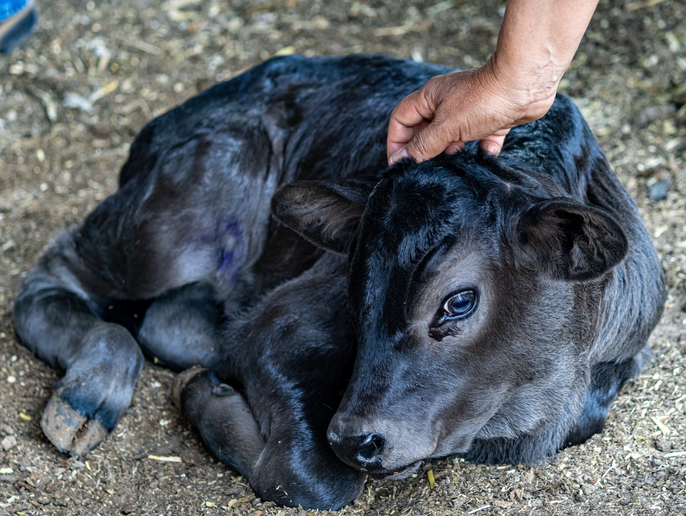

11 de mayo 2026
Gobierno de Morelos Mantiene Acciones de Vigilancia Sanitaria Pecuaria dn Coordinación con SENASICA
En apego a las disposiciones federales en materia de sanidad animal el gobierno de La tierra que nos une mantiene e impulsa una estrategia permanente de vigilancia, prevención y control sanitario La Secretaría de Desarrollo Agropecuario (Sedagro), reitera que, en apego a la normatividad federal vigente y atendiendo las disposiciones emitidas por el Servicio Nacional de Sanidad, Inocuidad y Calidad Agroalimentaria (SENASICA), en el oficio No. 1847 con fecha 5 de junio de 2025, fueron retiradas las casetas de inspección fitozoosanitaria ubicadas en el estado de Morelos, derivado del proceso de reordenamiento de Puntos de Verificación e Inspección Interna (PVI) instruido por la autoridad federal competente.